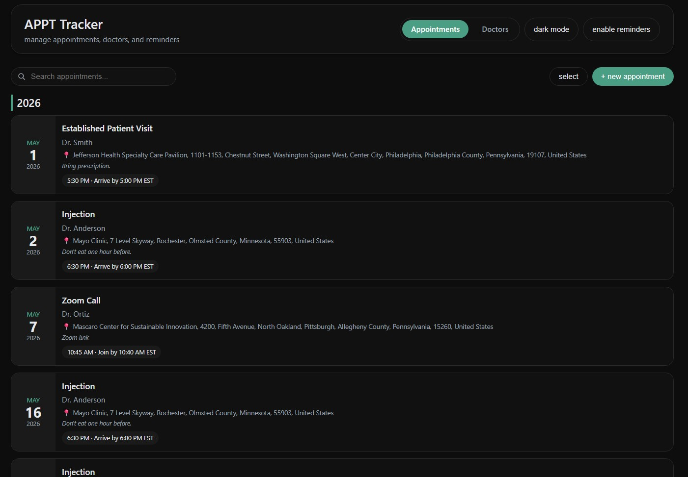

When my mom was diagnosed with long-COVID, she suddenly faced a overwhelming maze of medical appointments. Between primary care physicians, pulmonologists, neurologists, cardiologists, and specialists, keeping track of appointments, medications, and symptoms became a full-time job—one that added stress during an already difficult time.
I built a centralized appointment tracking system designed specifically for patients managing multiple specialists. The tracker consolidates all appointments in one place, sends reminders, and provides a clear overview of the care journey—reducing cognitive load and ensuring no critical appointment is missed.
Since implementing the tracker, my mother has:
Click below to view the public demo application.
Launch Appointment Tracker →